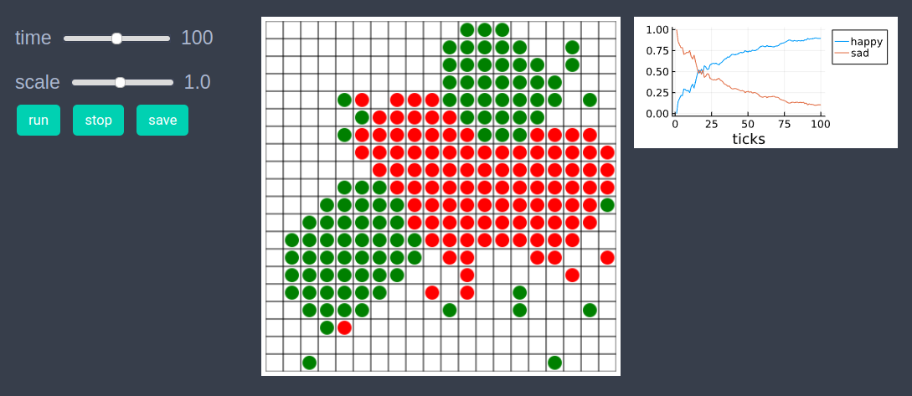
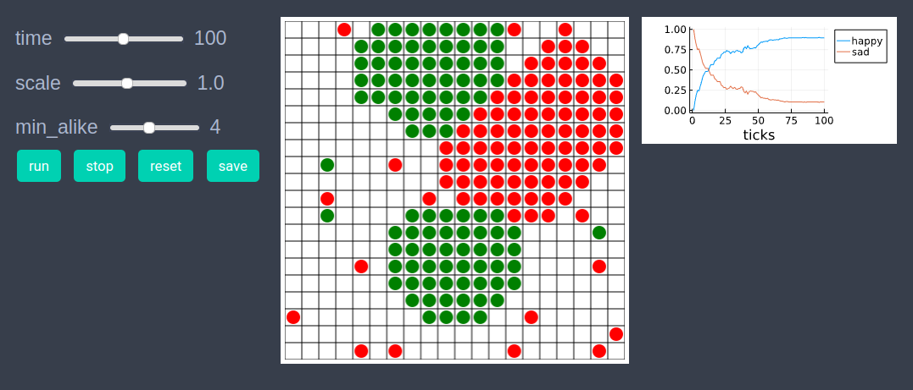
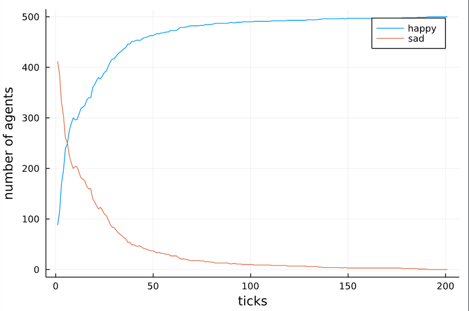

Schelling segregation model
using EasyABMStep 1: Create Agents and Model
Lets create 200 agents with properties pos, mood and color. The keeps_record_of argument is list of properties that the agent will record during time evolution. The min_alike property of the model which specifies the minimum number of alike neighbors for an agent to be happy, is set to be 4.
@enum agentsfeeling happy sad
agents = grid_2d_agents(200, pos = Vect(1,1), color = cl"green", mood = happy, keeps_record_of=Set([:pos, :mood]))
model = create_2d_model(agents, agents_type = Static, space_type=NPeriodic, size = (20,20), min_alike = 4)Step 2: Initialise the model
In the second step we initialise the agents by defining initialiser! function and sending it as an argument to init_model!. In the initialiser! function we randomly set agents color to be either cl"red" or cl"green" and set their positions randomly such that there is not more than one agent on each patch. Then we set the mood property of each agent to be happy or sad depending upon the number of alike agents in neighborhood.
function initialiser!(model)
min_alike = model.properties.min_alike
for agent in model.agents
agent.color = [cl"red", cl"green"][rand(1:2)]
x,y = random_empty_patch(model)
agent.pos = Vect(x,y)
end
for agent in model.agents
nbrs = neighbors_moore(agent, model, 1)
num_alike = 0
for nbr in nbrs
if nbr.color == agent.color
num_alike += 1
end
end
if num_alike < min_alike
agent.mood = sad
end
end
end
init_model!(model, initialiser = initialiser!)Step 3: Defining the step_rule! and running the model
In this step we implement the step logic of the Schelling's model in the step_rule! function and run the model for 200 steps.
function step_rule!(model)
min_alike = model.properties.min_alike
for agent in model.agents
count_alike = 0
for nbr in neighbors_moore(agent, model,1)
if agent.color == nbr.color
count_alike += 1
end
end
if count_alike ≥ min_alike
agent.mood = happy
else
agent.mood = sad
x,y = random_empty_patch(model)
agent.pos = Vect(x,y)
end
end
return
end
run_model!(model, steps=200, step_rule = step_rule! )Step 4: Visualisation
In order to draw the model at a specific frame, say 4th, one can use draw_frame(model, frame = 4, show_patches=true). If one wants to see the animation of the model run, it can be done as
animate_sim(model,agent_plots=Dict("happy"=> agent-> agent.mood == happy, "sad"=> agent-> agent.mood == sad), show_patches=true)
After defining the step_rule! function we can also choose to create an interactive application (which currently works in Jupyter with WebIO installation) as shown below. It is recommended to define a fresh model and not initialise it with init_model! or run with run_model! before creating interactive app.
agents = grid_2d_agents(200, pos = Vect(1,1), color = cl"green", mood = happy, keeps_record_of=Set([:pos, :mood]))
model = create_2d_model(agents, agents_type = Static, space_type=NPeriodic, size = (20,20), min_alike = 4)
create_interactive_app(model,
initialiser= initialiser!,
step_rule=step_rule!,
model_controls=[(:min_alike, "slider", 1:8)],
agent_plots=Dict(
"happy"=> agent-> agent.mood == happy,
"sad"=> agent-> agent.mood == sad),
frames=200, show_patches=true) 
Step 5: Fetch Data
In this step we fetch data of number of happy and sad agents at each time step as a dataframe using following line of code.
df = get_nums_agents(model,
agent-> agent.mood == happy,
agent-> agent.mood == sad,
labels=["happy","sad"],
plot_result=true)
Individual agent data recorded during model run can be obtained as
df = get_agent_data(model.agents[1], model).recordReferences
1.) https://en.wikipedia.org/wiki/Schelling%27smodelof_segregation